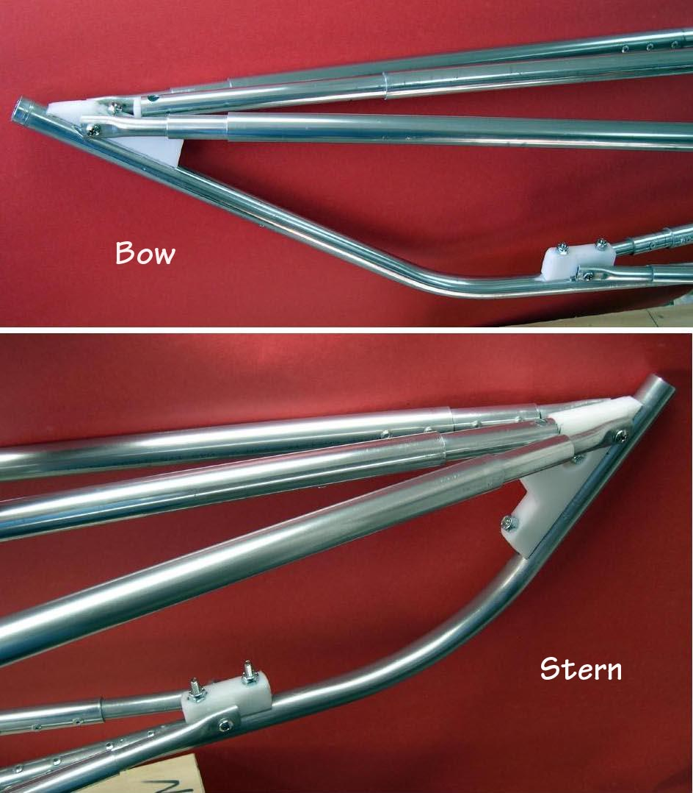

| Bow and Stern Plates (Alternative Attachment Method)) | Menu Previous Page Next Page |
|
 Instead of using stainless wood screws, 10/24 machine screws/ locking nuts can be used. In this method, holes are first drilled in both the HDPE stem plates and the stem tubes, before the machine screws are attached. This method is very secure. A drill press is best for drilling accurate / aligned holes is the HDPE. The HDPE holes are then used as a guide for hand drilling the tubing. ( Sea Tour 15 stems shown with 6063-T832 tubing). |
|